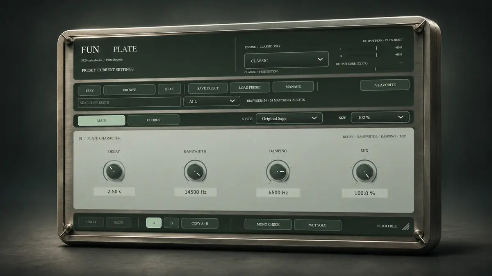
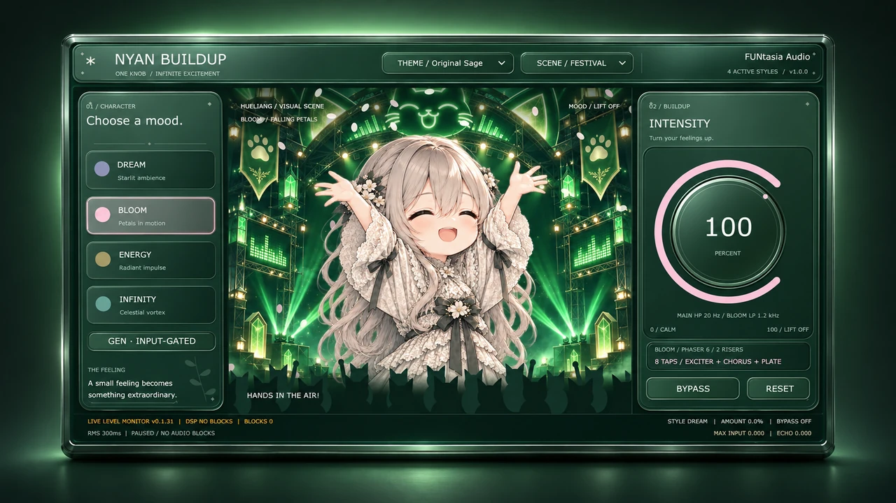
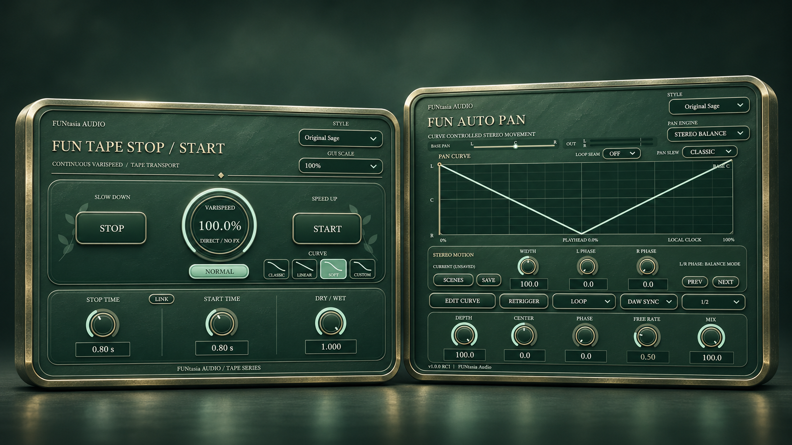
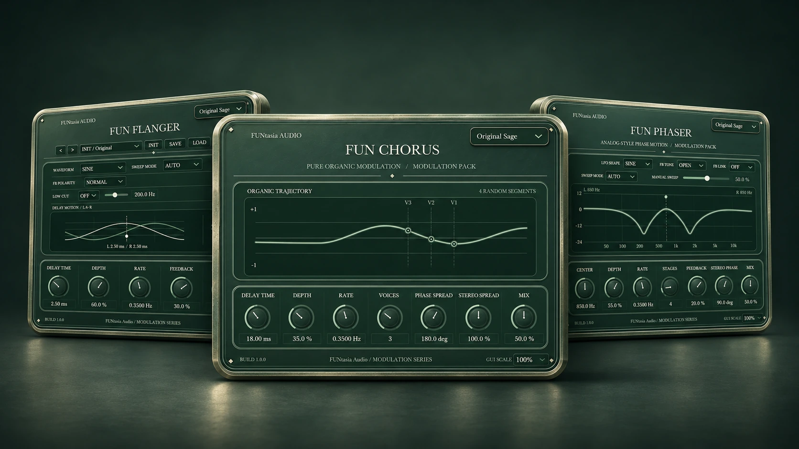
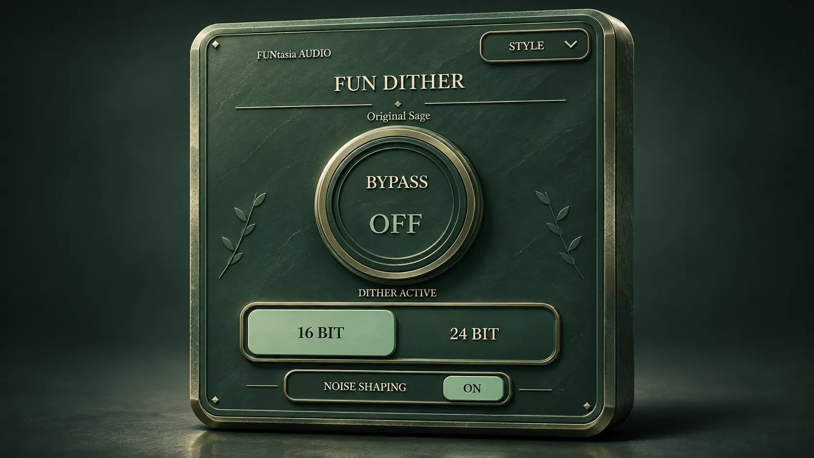
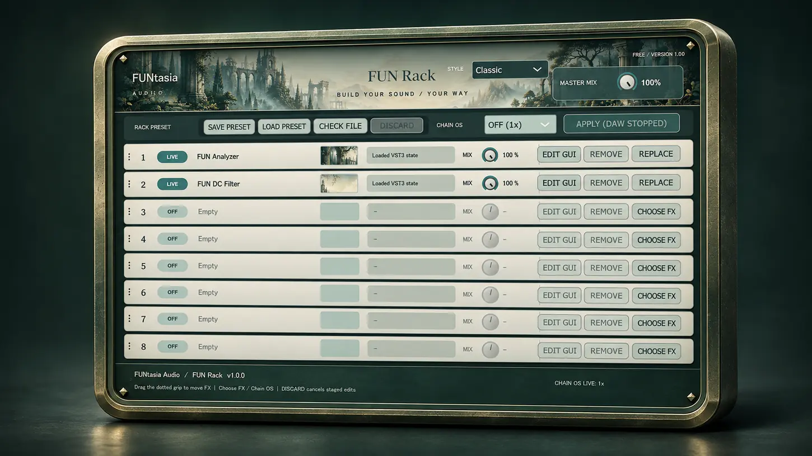
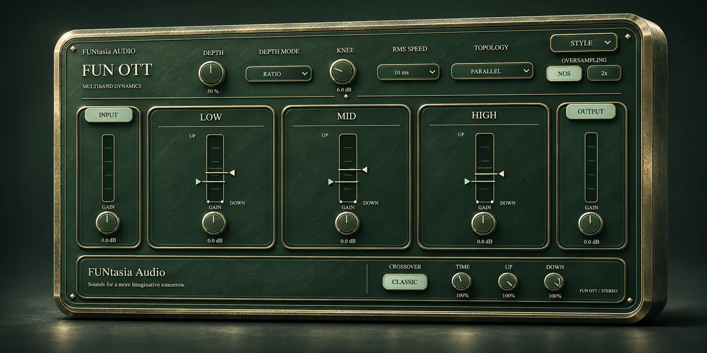
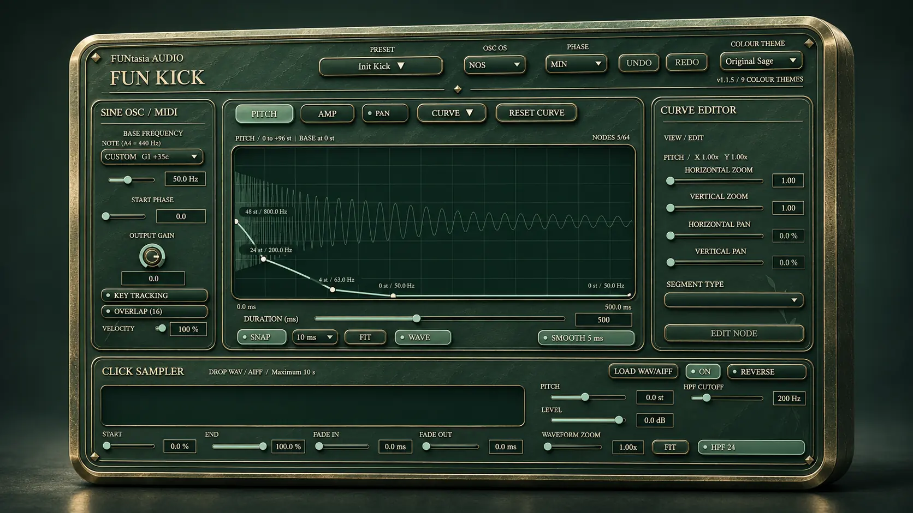

FUNtasia Free Collection v1.1.0
v1.1.0 新增：FUN Plate FREE v1.0.0，提供经典板式混响与 Chorus 调制。
产品卡片使用概念视觉图，可能与插件的实际界面有所不同。
质量保障： 每次更新均使用 pluginval Strictness Level 10、Steinberg VST3 Validator，并执行包含撤销／重做在内的功能与回归测试。
系统与文档：当前公开的音频插件主要面向 Windows 64 位 VST3。下载包中附带的 PDF 手册语言因产品而异，部分尚未提供简体中文版；请以各产品的官方发布页为准。
v1.1.0 新增：FUN Plate FREE v1.0.0，提供经典板式混响与 Chorus 调制。


只用一个旋钮，即可制作渐强、上升效果和转场。

















没有符合条件的产品
不是。AI 是我们的开发辅助工具，但不会不经人工决策就自动开发、发布插件。设计方向、代码审查、功能测试与修正都由我们持续把关。有关开发方式的详细介绍，请阅读 Note 上的说明文章（日文）.
部分插件最初作为 FUNtasia Studio 数字音频工作站的内置效果器开发。我们也将它们单独发布，让更多音乐创作者可以使用。
会。我们同样认真对待免费与付费产品的质量保障。有关 pluginval Strictness Level 10、Steinberg VST3 Validator 和回归测试，请阅读 质量保障说明.
欢迎加入官方 Discord 社区 FUNtasia Alchemist Guild。反馈问题时，请尽量提供产品版本、所用 DAW 和复现步骤。 加入社区 ↗
我们希望未来支持 macOS，但在推进之前，需要慎重评估能够持续维护和支持的范围。